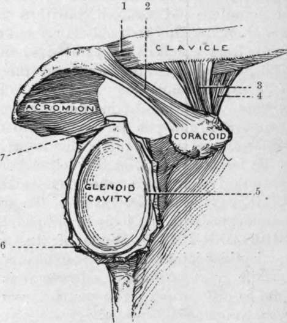

The Shoulder-Joint
Description
This section is from the book "Surgical Anatomy", by John A. C. MacEwen. Also available from Amazon: Surgical Anatomy.
The Shoulder-Joint
While of the ball-and-socket variety, the shoulder-joint relies chiefly upon muscular support, and thus, while great latitude of movement is permitted, it also is prone to dislocation. The coraco-acromial arch, with its concavity directed downwards, greatly strengthens the articulation against upward and backward or forward displacements. While normally the head of the humerus is only separated from the arch by the bursa, it may in cases of paralysis of the deltoid and scapular muscles fall away from it, permitting of the insertion of the fìnger between arch and head. The joint is also supported by the short scapular muscles and the long head of the biceps. In rupture of the latter the head of the humerus may be pulled up and forwards close to the coraco-acromial arch. Atmospheric pressure and cohesion also assist in keeping the parts in apposition. Movement is permitted in all directions, save direct adduction, but extension backwards is limited by the head coming in contact with the coracoid. The movements generally are rendered more free by the mobility of the scapula.
The glenoid cavity is shallow and pyriform, the apex being directed upwards. The lowest part of the margin is the strongest, and it is more prominent on the inner than on the outer side, thus strengthening the weakest part of the articulation, the lower and inner, through which part dislocations generally occur. When the arm hangs at the side, two-thirds of the humeral head are not in contact with the glenoid. The glenoid is covered by hyaline cartilage, and surrounded peripherally by a ring of fibro-cartilage, the glenoid ligament, which deepens the cavity. The supra- and infraspinati and teres minor muscles are inserted into the great tuberosity of the humerus, and their tendons practically fuse with the capsular ligament. A projection of synovial membrane under the infraspinatus is rare. The subscapularis, which is inserted into the lesser tuberosity, is separated from the capsule, which is deficient at this point, by a bursa-subscapular-which may communicate with the joint. Apart from these muscles the capsule is lax. The capsule is inserted above into the rim of the glenoid fossa and to the glenoid ligament, while below it is inserted into the anatomical neck of the humerus in front and externally, but a little distal to the neck behind and internally. It is strengthened by some accessory ligaments, the coraco-humeral running from the root of the coracoid to the great tuberosity, and superior, middle, and inferior gleno-humeral running from the glenoid margin above and in front to the lesser tuberosity and neck of the humerus below. The long head of the biceps acts as an accessory ligament, being inserted above into a small depression at the upper part of the glenoid fossa and to the glenoid ligament, and then, crossing the head to the inner side of the summit, descends in the bicipital groove. It is invested in a fold of synovial membrane, which forms a prolongation lining the bicipital groove as far as the insertion of the pectoralis major (the intertubercular bursa), and the groove is converted into a canal at its upper part by a series of ligamentous fibres, the transverse humeral ligament.
Fig. 47. The Right Glenoid Cavity, and the Adjacent Ligaments. (From Buchanan's " Anatomy.")
1. | Capsule of acromio-clavicular joint. | 5. Glenoid ligament. |
Coraco-acromial ligament. | 6. Capsular ligament (cut). | |
3. | Trapezoid ligament. | 7. Long head of biceps. |
4. | Conoid ligament. |
The shoulder is the most common seat of dislocations. By a false luxation is meant a displacement of the head, which remains within the capsule (as might occur in paralysis of the muscles), while in true dislocations the head leaves the capsule through a tear in the latter, which in the shoulder is said always to occur primarily at the lower and inner aspect, the head assuming the subglenoid position. Such displacements are caused by direct violence forcing the head downwards, or by indirect violence when the limb is abducted. Generally the head does not remain in the subglenoid position, but is drawn forwards and inwards by the pectoralis major, so as to rest under the coracoid. A subspinous dislocation is supposed to be due to the dislocating force acting from in front, and so driving the head backwards. In all dislocations of the shoulder there is flattening of the deltoid, owing to removal of the subjacent head, so that a straight-edge touching the external condyle and lying along the axis of the upper arm when at the side will also touch the acromion process. Normally the straight-edge lies nearly a finger's breadth from the acromion. As the deltoid is also stretched, there is a tendency to abduction of the arm from the side, and this is most marked in the subglenoid variety, while stretching of the biceps causes flexion and slight supination of the forearm. In the normal condition the patient can touch the sound shoulder with the fingers of the affected limb, while the internal condyle of the humerus touches the crest of the ilium ; while in dislocation, owing to the head lying much closer to the thoracic wall than normally and the stretching of the muscles, the lower end of the humerus generally cannot be brought close into the side, and the necessary rotation is not permitted. The head having left the glenoid cavity, there is an increase in the vertical circumference of the shoulder ; but this is of little value as a test, since many swellings of the shoulder produce a similar result. The vessels and nerves may be pressed on, especially in the subglenoid or subcoracoid varieties, producing oedema, pain, and loss of power, and even in rare cases gangrene. The circumflex nerve is also occasionally damaged.
Much the most common form of dislocation is the subcoracoid, the head lying directly below the coracoid process, in front, internal to, and a little below, its normal position. The posterior part of the articular surface rests on the neck of the scapula, the anatomical neck rests on the anterior lip of the glenoid fossa, and the posterior part of the great tuberosity is opposite the glenoid cavity. The subscapulars muscle going to the lesser tuberosity is stretched over the humeral head, and may be partly torn, while the supra- and infraspinati and teres minor are stretched or torn, or the great tuberosity may be separated. The long head of the biceps is deflected down and inwards, and may even be torn from its groove, while the short head of the biceps and the coraco-brachialis are rendered very tense, and lie in front of the head, instead of to the inner side. Frequently the head is rotated markedly inwards, constituting an intracoracoid dislocation, the biceps tendon being markedly deflected, and the head producing only a slightly marked prominence. While there is actual lengthening present, the abduction produced frequently presents an apparent shortening, when a measurement is taken from the acromion to the external condyle. Rarely the head is carried farther inwards and upwards towards the clavicle, in extreme cases constituting a subclavicular dislocation.
The subglenoid comes next to the subcoracoid dislocation in order of frequency. Here the head lies below and a little in front of and internal to its normal position, lying between the subscapularis above, and the long head of the triceps below, the latter arresting its downward movement. The articular head rests on the flattened portion of the axillary border of the scapula, which gives origin to the triceps, just below the glenoid. The subscapularis and spinati muscles are stretched or torn, but the teres muscles generally escape. The deltoid is much stretched, and produces the marked abduction of the limb, while the coraco-brachialis and biceps are stretched, but not generally injured. Lengthening is present, but is often masked by abduction.
Continue to: